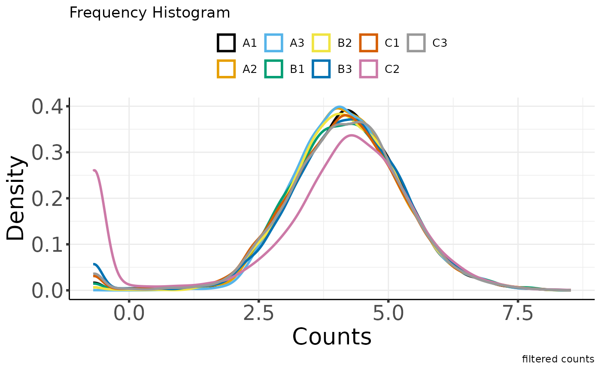
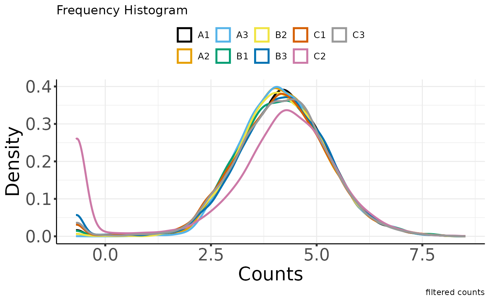

library(MOSuite)
library(dplyr)
#>
#> Attaching package: 'dplyr'
#> The following objects are masked from 'package:stats':
#>
#> filter, lag
#> The following objects are masked from 'package:base':
#>
#> intersect, setdiff, setequal, union
options(moo_print_plots = TRUE)
moo_nidap <- create_multiOmicDataSet_from_dataframes(
sample_metadata = as.data.frame(nidap_sample_metadata),
counts_dat = as.data.frame(nidap_raw_counts)
) %>%
clean_raw_counts() %>%
filter_counts(group_colname = "Group") %>%
normalize_counts(group_colname = "Group") %>%
batch_correct_counts(
covariates_colname = "Group",
batch_colname = "Batch",
label_colname = "Label"
) %>%
diff_counts(
count_type = "filt",
covariates_colnames = c("Group", "Batch"),
contrast_colname = c("Group"),
contrasts = c("B-A", "C-A", "B-C"),
input_in_log_counts = FALSE,
return_mean_and_sd = FALSE,
voom_normalization_method = "quantile",
) %>%
filter_diff()#> * cleaning raw counts
#> Not able to identify multiple id's in GeneName
#> Columns that can be used to aggregate gene information GeneName
#> Aggregating the counts for the same ID in different chromosome locations.
#> Column used to Aggregate duplicate IDs: GeneName
#> Number of rows before Collapse: 43280
#> no duplicated IDs in GeneName
#> * filtering clean counts
#> Number of features after filtering: 7943 

#> * normalizing filt counts
#> Total number of features included: 7943
#> Warning: ggrepel: 1 unlabeled data points (too many overlaps). Consider
#> increasing max.overlaps


#> Sample columns: A1, Sample columns: A2, Sample columns: A3, Sample columns: B1, Sample columns: B2, Sample columns: B3, Sample columns: C1, Sample columns: C2, Sample columns: C3
#> * batch-correcting norm-voom counts
#> Found2batches
#> Adjusting for2covariate(s) or covariate level(s)
#> Standardizing Data across genes
#> Fitting L/S model and finding priors
#> Finding parametric adjustments
#> Adjusting the Data


#> The total number of features in output: 7943
#> Number of samples after batch correction: 10
#> * differential counts
#> Setting first column of `counts` as gene annotation.
#> Total number of genes included: 7943
#> `geom_smooth()` using method = 'gam' and formula = 'y ~ s(x, bs = "cs")'
#> Joining with `by = join_by(GeneName)`
#> Joining with `by = join_by(GeneName)`
#> * filtering differential features
#> Total number of genes selected with adjpval < 0.05 and | logFC | ≥ 1 is
#> sum(selgenes)
moo_nidap@analyses$diff %>%
join_dfs_wide() %>%
head()
#> Joining with `by = join_by(GeneName)`
#> Joining with `by = join_by(GeneName)`
#> GeneName B-A_FC B-A_logFC B-A_tstat B-A_pval B-A_adjpval C-A_FC
#> 1 Mrpl15 1.059250 0.08304265 0.2377167 0.8162052 0.9682636 -1.068725
#> 2 Lypla1 1.370909 0.45513310 1.1301522 0.2810081 0.7797612 -1.066981
#> 3 Tcea1 1.083699 0.11596469 0.3657617 0.7210585 0.9500109 -1.177051
#> 4 Atp6v1h 1.311199 0.39088683 1.1241780 0.2834330 0.7825194 -1.221374
#> 5 Rb1cc1 1.514888 0.59921070 1.3095182 0.2154459 0.7187843 1.313927
#> 6 Pcmtd1 1.112738 0.15411405 0.2497788 0.8070821 0.9663212 3.238362
#> C-A_logFC C-A_tstat C-A_pval C-A_adjpval B-C_FC B-C_logFC
#> 1 -0.09589040 -0.2897955 0.777035116 0.89204033 1.132046 0.1789331
#> 2 -0.09353458 -0.2379598 0.816021040 0.91228196 1.462734 0.5486677
#> 3 -0.23517638 -0.7602905 0.462100568 0.69160897 1.275569 0.3511411
#> 4 -0.28850521 -0.8324070 0.421815393 0.65837683 1.601465 0.6793920
#> 5 0.39388567 0.9073581 0.382492765 0.62547476 1.152946 0.2053250
#> 6 1.69526432 3.4021010 0.005417489 0.05722644 -2.910264 -1.5411503
#> B-C_tstat B-C_pval B-C_adjpval
#> 1 0.5285947 0.60695058 0.8355016
#> 2 1.3910079 0.19006353 0.4871490
#> 3 1.1281746 0.28180907 0.5893629
#> 4 1.9865449 0.07085778 0.3168579
#> 5 0.4843119 0.63708764 0.8518020
#> 6 -2.9536960 0.01233497 0.1411803
moo_nidap@analyses$diff_filt %>% head()
#> GeneName B-A_FC B-A_logFC B-A_tstat B-A_pval B-A_adjpval C-A_FC C-A_logFC
#> 1 Rrs1 -2.06 -1.040 -2.860 0.0147 0.276 -2.71 -1.44
#> 2 Mcm3 -1.45 -0.539 -1.870 0.0869 0.544 -2.45 -1.29
#> 3 Ogfrl1 1.07 0.102 0.292 0.7750 0.960 -3.78 -1.92
#> 4 Smap1 2.96 1.570 2.010 0.0684 0.499 5.68 2.51
#> 5 Plekhb2 -1.24 -0.312 -1.100 0.2950 0.789 2.69 1.43
#> 6 Il18r1 2.41 1.270 0.706 0.4940 0.875 36.40 5.19
#> C-A_tstat C-A_pval C-A_adjpval B-C_FC B-C_logFC B-C_tstat B-C_pval
#> 1 -3.83 2.48e-03 0.03680 1.32 0.399 0.941 3.66e-01
#> 2 -4.33 1.03e-03 0.02240 1.69 0.755 2.380 3.53e-02
#> 3 -4.04 1.71e-03 0.03030 4.05 2.020 4.030 1.76e-03
#> 4 3.59 3.82e-03 0.04700 -1.92 -0.938 -1.750 1.07e-01
#> 5 5.99 6.94e-05 0.00463 -3.34 -1.740 -6.980 1.66e-05
#> 6 3.13 8.86e-03 0.07640 -15.10 -3.920 -4.230 1.23e-03
#> B-C_adjpval
#> 1 0.6660
#> 2 0.2300
#> 3 0.0550
#> 4 0.3780
#> 5 0.0033
#> 6 0.0455